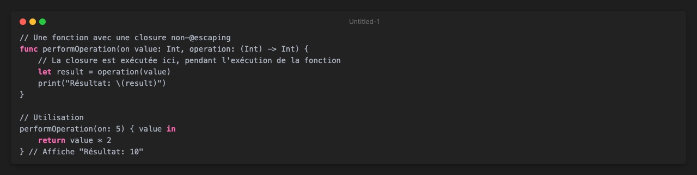

Closures @escaping vs non-@escaping en Swift
Les closures sont l'un des aspects les plus puissants et flexibles de Swift. Elles nous permettent de traiter des blocs de code comme des variables que nous pouvons passer à des fonctions, stocker pour une utilisation ultérieure, et manipuler de différentes façons. Cependant, comprendre les différences entre les closures @escaping et non-@escaping peut être un défi pour les développeurs Swift.
Dans cet article, nous allons explorer en profondeur ces deux types de closures, leurs différences, et les cas d'utilisation appropriés pour chacun.
Les bases
Avant de plonger dans les spécificités de @escaping et non-@escaping, rappelons-nous ce qu'est une closure :
Les closures sont souvent utilisées comme arguments de fonction :
Non-@escaping closures (par défaut)
Par défaut, en Swift, toutes les closures passées comme arguments de fonction sont non-@escaping. Cela signifie que la closure doit être exécutée avant que la fonction appelée ne se termine.

Dans cet exemple, la closure operation est exécutée à l'intérieur de la fonction performOperation(on:operation:) et n'est pas stockée ou utilisée après la fin de l'exécution de la fonction.
Avantages des closures non-@escaping
-
Optimisations du compilateur : Le compilateur peut appliquer des optimisations lorsqu'il sait qu'une closure n'échappera pas au contexte de la fonction.
-
Pas de cycles de référence à gérer : Puisque la closure ne survit pas à la fonction, vous n'avez pas à vous soucier des cycles de référence (nous en parlerons plus en détail).
-
Utilisation de
selfsans capturer explicitement : Vous pouvez utiliserselfà l'intérieur de la closure sans avoir à l'écrire explicitement.
@escaping closures
Une closure @escaping est une closure qui peut "s'échapper" du corps de la fonction à laquelle elle est passée. Cela signifie que la closure peut être exécutée après que la fonction se soit terminée. Pour rendre cela possible, Swift doit s'assurer que la closure reste valide même après la fin de l'exécution de la fonction.
Pour déclarer une closure comme @escaping, vous ajoutez l'attribut @escaping devant le type de la closure dans la signature de la fonction :
Cas d'utilisation courants des closures @escaping
- Opérations asynchrones : Le cas d'utilisation le plus courant est pour les opérations asynchrones, comme les appels réseau, où le résultat n'est pas immédiatement disponible.
- Stockage pour une utilisation ultérieure : Lorsque vous souhaitez stocker une closure dans une propriété pour l'appeler plus tard.
- Callbacks pour les API : De nombreuses API utilisent des closures @escaping comme callbacks.
Considérations importantes avec les closures @escaping
1. Cycles de référence
Un problème courant avec les closures @escaping est la création de cycles de référence (memory leaks). Cela se produit lorsque la closure capture une référence forte à self et que self a également une référence forte à la closure.
Pour éviter cela, vous devez utiliser [weak self] ou [unowned self] :
Avec [weak self], self devient un optional à l'intérieur de la closure, vous devez donc utiliser self? ou faire un unwrap sécurisé :
2. Référence explicite à self
Dans une closure @escaping, vous devez explicitement référencer self :
Quand choisir @escaping vs non-@escaping?
Utilisez non-@escaping (défaut) quand :
- La closure est exécutée synchronement, pendant l'exécution de la fonction.
- Vous n'avez pas besoin de stocker la closure pour une utilisation ultérieure.
- Vous souhaitez des performances optimales et moins de considérations de gestion de mémoire.
Utilisez @escaping quand :
- La closure est exécutée de manière asynchrone, après que la fonction se soit terminée.
- Vous devez stocker la closure comme une propriété ou la passer à une autre fonction.
- Vous travaillez avec des API qui nécessitent des callbacks (réseau, animations, etc.).
Exemple concret : téléchargement d'Image
Voyons un exemple concret pour illustrer la différence entre @escaping et non-@escaping :
Analysons cet exemple en détail
1. La fonction avec closure non-@escaping
func processImage(_ image: UIImage, filter: (UIImage) -> UIImage) -> UIImage {
// La closure filter est exécutée immédiatement
let filteredImage = filter(image)
return filteredImage
}
Cette fonction processImage(_:filter:) illustre parfaitement une closure non-@escaping :
- La closure
filterest exécutée synchronement à l'intérieur de la fonction - L'exécution de la fonction ne se termine pas avant que la closure ne soit complètement exécutée
- Une fois la fonction terminée, la closure n'existe plus (elle ne s'échappe pas)
- Nous n'avons pas besoin de marquer la closure comme @escaping car elle n'est pas stockée ou utilisée après la fin de la fonction
La fonction prend une image et une closure qui applique un filtre, puis retourne immédiatement l'image filtrée. Il s'agit d'une opération synchrone classique.
2. La fonction avec closure @escaping
func downloadImage(from url: URL, completion: @escaping (UIImage?) -> Void) {
// La closure completion sera exécutée après la fin de cette fonction
URLSession.shared.dataTask(with: url) { data, response, error in
// Code pour traiter la réponse et appeler completion
}.resume()
}
La fonction downloadImage(from:completion:) démontre une closure @escaping typique :
- La fonction retourne immédiatement après avoir lancé la tâche de téléchargement, sans attendre que la closure
completionsoit exécutée - La closure
completionest passée à la méthodedataTask(with:completionHandler:)qui l'exécutera plus tard, après que notre fonctiondownloadImageait déjà terminé son exécution - Swift doit garantir que la closure reste valide même après la fin de la fonction, d'où le besoin de l'attribut
@escaping - La closure est exécutée de manière asynchrone sur un thread différent
Le téléchargement se fait en arrière-plan, et quand il se termine (possiblement plusieurs secondes plus tard), la closure completion est appelée avec l'image téléchargée ou nil en cas d'échec.
3. Combiner les deux approches
func downloadAndProcessImage(from url: URL, filter: @escaping (UIImage) -> UIImage, completion: @escaping (UIImage?) -> Void) {
downloadImage(from: url) { [weak self] image in
guard
let self = self,
let downloadedImage = image
else {
completion(nil)
return
}
// Traitement de l'image téléchargée avec notre filtre
let filteredImage = self.processImage(downloadedImage, filter: filter)
completion(filteredImage)
}
}
Dans cette fonction, nous voyons comment les deux types de closures interagissent :
- Deux closures @escaping sont utilisées (
filteretcompletion) car elles doivent être conservées jusqu'à ce que le téléchargement asynchrone soit terminé - Nous utilisons
[weak self]pour éviter un cycle de référence - Une fois l'image téléchargée, nous utilisons notre fonction synchrone
processImageavec la closurefilterqui était en attente - Enfin, nous appelons la closure
completionavec l'image traitée
Pourquoi filter doit-il être @escaping ici ?
Vous pourriez vous demander pourquoi la closure filter doit être marquée comme @escaping dans downloadAndProcessImage. Après tout, elle est utilisée de manière synchrone dans processImage, n'est-ce pas ?
La raison est que filter n'est pas utilisée immédiatement dans downloadAndProcessImage - elle est stockée et utilisée plus tard, après que le téléchargement soit terminé. Tout comme completion, elle "s'échappe" de la portée immédiate de la fonction.
Cela illustre un point important : même une closure qui sera éventuellement utilisée de manière synchrone doit être marquée comme @escaping si elle n'est pas exécutée immédiatement dans la fonction qui la reçoit.
Les différences essentielles illustrées par l'exemple
-
Moment d'exécution :
- Non-@escaping (processImage) : Exécution immédiate et synchrone
- @escaping (downloadImage) : Exécution différée et asynchrone
-
Durée de vie :
- Non-@escaping : La closure existe uniquement pendant l'exécution de la fonction
- @escaping : La closure continue d'exister après que la fonction se soit terminée
-
Gestion de la mémoire :
- Non-@escaping : Pas besoin de considérations particulières pour la gestion de la mémoire
- @escaping : Nécessite d'être attentif aux cycles de référence, d'où l'utilisation de
[weak self]
-
Référence à self :
- Non-@escaping : Pas besoin de référence explicite à
self - @escaping : Référence explicite à
selfrequise
- Non-@escaping : Pas besoin de référence explicite à
-
Contexte d'utilisation :
- Non-@escaping : Idéal pour les transformations synchrones comme le filtrage d'images
- @escaping : Nécessaire pour les opérations asynchrones comme les téléchargements réseau
Utilisation dans une application réelle
Voici comment on utiliserait notre classe ImageDownloader dans une application :
let downloader = ImageDownloader()
// Création d'un filtre noir et blanc
let blackAndWhiteFilter: (UIImage) -> UIImage = { image in
// Code pour convertir l'image en noir et blanc
// (Simplifié pour l'exemple)
return image
}
// Téléchargement et application du filtre
if let url = URL(string: "https://example.com/image.jpg") {
downloader.downloadAndProcessImage(from: url, filter: blackAndWhiteFilter) { processedImage in
if let image = processedImage {
// Utiliser l'image traitée
DispatchQueue.main.async {
// Mise à jour de l'UI avec l'image
imageView.image = image
}
} else {
print("Échec du téléchargement ou du traitement de l'image")
}
}
}
Cet exemple montre clairement pourquoi les deux types de closures sont nécessaires et comment ils interagissent dans une application réelle. Le modèle de téléchargement et de traitement d'images est particulièrement pertinent car il combine des opérations synchrones (filtrage) et asynchrones (téléchargement réseau), illustrant parfaitement quand utiliser chaque type de closure.
Conclusion
La compréhension de la différence entre les closures @escaping et non-@escaping est essentielle pour écrire du code Swift performant et sans fuites de mémoire. En résumé :
- Les closures non-@escaping (par défaut) sont exécutées pendant la durée de vie de la fonction qui les reçoit.
- Les closures @escaping peuvent être exécutées après la fin de la fonction qui les reçoit, ce qui nécessite une gestion supplémentaire de la mémoire pour éviter les cycles de référence.
En pratique, vous rencontrerez des closures @escaping dans presque tous les appels asynchrones, tandis que les closures non-@escaping sont plus courantes pour les opérations synchrones comme le filtrage de collections ou la transformation de données.
En comprenant quand et comment utiliser ces deux types de closures, vous pouvez écrire du code Swift plus efficace, plus clair et plus robuste.